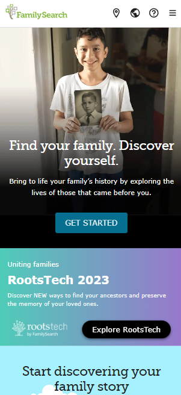
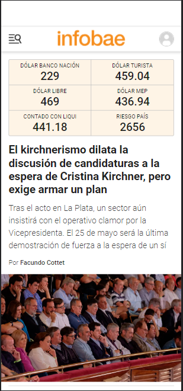

White Space and Clean Desgin
The use of white space and clean design can be seen in this screenshot of the home page of the website Google. In this case, the only thing we can see with the company logo is the search bar and button to start the search, which is the main purpose of the website. The website isn't completely covered in large fonts or images that aren't necessary for the main goal because the design is minimalist.
PARC: Alignment
FamilySearch
familysearch.org The alignment principle is in use in this screenshot of the FamilySearch website's home page. We can appreciate the navigation's Centered Vertical Alignment, which allows all of the elements to fit in a single row. Additionally, if we use the 'Get Started' button as a point of reference, we can appreciate the banner's Centered Horizontal Alignment.
PARC: Contrast
Infobae
infobae.com The principle of contrast is used in this screenshot of the Infobae website's home page. The website's background is white, the text is black, and all other elements have a strong contrast to the white background. The text and the remaining items are both clearly readable.